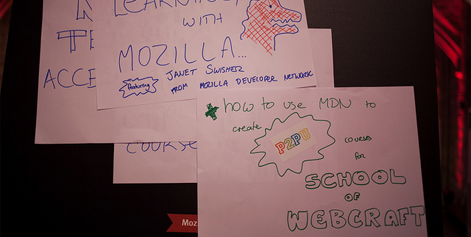
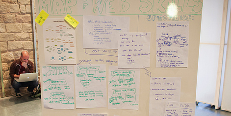

Webcraft
What if web education worked like the web? Web-building skills (or webcraft) constitute a new, critical form of literacy that is lacked by far more people than good old reading and writing. Can you use the practices of the open web to spread webcraft farther and wider? It’s worth a shot.
An eviscerating keynote presentation from a 20-year-old self-taught British programmer left no doubt in attendees’ minds as to the sorry state of web education.
I got into this industry when I was about 13 by playing games, NeoPets, then Myspace pages,” said Anna Debenham, who founded “Scrunchup,” a web magazine for young developers. When I started studying design in school, the course material was hugely out of date.
She gave several examples in her slides: British college-prep test questions specifying the use of tables (a slow, inflexible method) in websites, instructing people to write code in PowerPoint or Word rather than directly in a working program, giving outdated definitions for HTML.
The problem: Traditional academia is hard-pressed to move at the speed of technology.
We’re not just talking about universities, were talking about primary schools and secondary schools. By the time you get to university, it’s too late. As Anna pointed out:
People like me grasp on to technology at such a young age that the schools just can’t keep up.
So, is it possible to make web education work more like the web? Especially the open web? It turns out that there’s an emerging world of people trying to do just that. Chris Mills, founder of the Open Web Education Alliance, says:
So many institutions out there are teaching either no web design or teaching it in a really outdated crappy way. A community-led approach can cover more ground a lot quicker.
{kind=link}
Chris Mills looks like a typical metalhead. At over six feet tall with long hair, a goatee, a black T-shirt, and the Skype name “dark satanic mills,” he doesn’t do anything to dispel the aura of gloom. But far from worshiping Satan, the U.K. native is actually dedicated to ideals of inclusion and accessibility, especially in webcraft. He works for Opera, an open-source software company as the chief creator of its Web Standards Curriculum. It’s a “course designed to give anyone a solid grounding in web design/ development, no matter who they are—it is completely free to use, accessible, and assumes no previous knowledge.”
How did you get interested in the connection between free software and open education?
It’s been a passion of mine since I first started using the Internet. I did biochemistry for a degree—most webby people never do anything for official qualification that has to do with what they do for a living. I’ve never been a massive tech person although I am good at HTML. I’m interested in the social and educational applications. I think the Internet is an amazing invention as a universal communication mechanism.
And how did you come to write Opera’s web standards curriculum?
I worked for about a decade at various publishing houses, and I kept going to publishing companies saying, why don’t we produce an amazing free resource to allow anybody to learn this stuff even if they can’t buy our books? I can understand a company having a slight business conflict over this. But Opera, from a purely business perspective, saw it as a good public relations strategy to spread the world of open standards and best practices.
So I got together the people who I thought would be good for the job and signed them up to write the course. It took me a year to design the curriculum.
Now it’s at a pretty good stage and it’s been translated into 10 different languages. I’ve had good feedback from people around the world who found it useful, ranging from teachers at colleges and universities as far away as Indonesia, China and Japan, to an 80-year-old guy from Australia that learned how to make websites and put up photos of his grandchildren.
And this has connected you to a broader learning, freedom and the web community?
In 2007, at South by Southwest. I bumped into some like-minded people, like Aarron Walter, the lead U.S. designer for MAILchimp, an Atlanta-based company. He was producing something at the time called WaSP inteRACT, another really cool educational resource that provides core structures and sample exam questions and rubrics for assessment—not the tutorial itself but the other stuff to go along with that to put together a curriculum.
And so, even though we’d started those projects totally separately, they worked together really nicely. And they’ve listed all the OPERA web standards curriculum as recommended reading.
Aaron and I also worked together on a book, InterACT with Web Standards: A Holistic Approach to Web Design, which came out in May of this year. What we wanted to do was to produce the perfect basic textbook for people who want to get into web design. It doesn’t cover a lot of JavaScript, just information architecture and HTML.
Cool! So tell me about the Open Web Education Alliance.
OWEA is meant to act as a kind of governing body that will be able to regulate all this stuff and show that curricula are kept up to date and in good quality, and that this stuff is actually getting to the educators who need it.
And how does this connect with the accessibility work you’ve been doing?
I’ve been working with the U.K. government to try to actually get proper government legislation. There’s nothing to force educators to update their material and teach it properly, so we want to make that a bit more enforceable. One big dream I have, if this kind of legislation is successful in the U.K., would be to use that template to work in other countries as well.
Isn’t it a bit strange for a self-taught web designer who’s pioneered in the field of open education, to get so immersed in government mandates this way?
Well, I don’t think there’s anything wrong with web design being self-taught. I know some hideously talented people who’ve been working since the age of seventeen. But it’s good to have proper courses available for people who want to go down that path equally as well as self-learning. We should make it so the option is available in a more effective way.
The other thing it’s about is getting the university structure and industries in general to take web development and web design more seriously. It’s talked about a lot in OWEA. Web design at the university level is an orphan. It doesn’t fit well into any existing subject area. In computer science it’s seen as a wussy lightweight copout thing to do because it’s not programming. Graphic designers are scared of it because it involves code. I’m trying to get the slight chaos of self learning more into official courses—to make education courses work more how the web works.
“Learning, Freedom and the Web” was a scene for publicizing and further developing the idea of a community-led approach to teaching web development, through an emerging network of organizations including the Open Web Education Alliance, Peer 2 Peer University, and its School of Webcraft (in partnership with the Mozilla Developer Network).
The Webcraft Toolshed: bringing together interdisciplinary web professionals across design, development and marketing, students, university and college web educators, informal trainers, advocates, and anyone who wants the core values of openness and inclusion to form the foundation for the web’s vibrant future. Together, the School of Webcraft and OWEA want to establish open collaboration on projects that share the common goal of standards-based web education.
The Webcraft Toolshed aims to achieve this by:
1. Mapping the necessary skills you need to practice web craft and describing the overarching principles that guide web professionals.
2. Building concrete strategies to connect the organizations, methods and resources that learners turn to for web education.
3. Remixing and repurposing existing web learning resources for new learning forms and channels.
Hosted by School of Webcraft (powered by P2PU and Mozilla), Mozilla Developer Network (MDN), and the Open Web Education Alliance (OWEA).
The Peer 2 Peer University http://p2pu.org/, with the tagline, “learning for everyone, by everyone, about almost everything,” is, “{an online community of open study groups for short university-level courses. Think of it as online book clubs for open educational resources. P2PU helps you navigate the wealth of open education materials that are out there, creates small groups of motivated learners, and supports the design and facilitation of courses. Students and tutors get recognition for their work, and we are building pathways to formal credit as well.”}
Though less than three years old, P2PU is one of the most well-established and best recognized experiments in peer-led learning. It began when Harvard graduate student Neeru Paharia met Jan Philipp Schmidt, a German computer scientist working on open courseware in South Africa, at a conference in Croatia. They formed a team together with a Norwegian, Stian Haklev, and an Australian, Delia Browne, and got a $70,000 seed grant from the Hewlett Foundation to launch their first pilot of 10 courses in 2009. True to the peer learning spirit, P2PU has to give the public what they want—courses got going in subjects that already had online audiences of self-motivated learners, like writing, behavioral economics, and Wikipedia visualization.
P2PU is trying many different technologies, from video chat to EtherPads, Google docs, and plain old email. Class facilitators are experimenting with ways to put assessment in the hands of peers to take the pressure off the facilitator as the “single point of failure”—which is key to getting a model that can attain scalability.
To do this, they need to innovate the practices of both teaching and learning. They don’t use the term “teaching,” rather, facilitating, with the idea that learners will identify their own goals and reasons for being there. It’s very much a work in progress.
From the P2PU Course Design Handbook, a community-generated wiki:
1. Course organizers identify basic learning objectives. Developing learning objectives are a necessary component of P2PU courses. Learning objectives are a broad generalization of the purpose of the course and include the acquisition, retention, application, and adaptability of knowledge and skills acquired through participation. What skill or sum of knowledge will a participant gain? Where will they be able to apply it?
2. Participants identify their personal learning goals. You’ll find that P2PU participants have differing motives for taking a course. Often participants work on a range of projects within the same course. Therefore, participants should identify their personal learning goals when they sign up for the course and revisit them when course begins. Ask participants to share their personal learning goals with the group to promote discussion and cross-pollination of ideas.
In the fall of 2010, P2PU teamed up with Mozilla to launch the School of Webcraft, with the goal of creating “a peer-led system that helps people around the world easily gain skills and build careers on open web technology.”
Pippa Buchanan, who started her journey into the world of self-learning by blogging about a DIY Master’s degree, now works for P2PU. She says:
The original idea for the School of Webcraft arose when John Britton taught a course on P2PU about ’Mashing Up The Open Web.’ That sparked a conversation between Mozilla and P2PU on the idea of a partnership based around web developer education. Mozilla would provide the brand recognition and focus on the open web, and P2PU would bring a lively community of peer learners to incubate the School of Webcraft.
Fall of 2010 saw the creation of 12 initial School of Webcraft courses. Over 500 people applied to take part in the free peer-led classes and 345 were accepted. There were a range of people, from those wanting to build a career in web development, to teachers and designers. And there was a great range of participants from people in their late to those in their fifties who are both updating their skills and building their first ever website.
Some people are aiming to build educational tools, others are testing HTML 5 support across different browsers and other people are learning the skills that help them to read software source code better.
“We’ve got 15-year-olds from Bangalore, and retired librarians, and everything in-between,” says Stian Haklev, a PhD student originally from Norway and another P2PU founder. “Many organizations like Opera, Adobe, Yahoo, WOW, and WaSP InterAct have been diligently working to develop curricula and outreach programs to help schools better prepare their students for a career on the Web. The Open Web Education Alliance (OWEA) will bring many education initiatives together in a broad collaborative. Its mission is to bring together companies, schools, and organizations involved in shaping the education of Web professionals to explore the issues around the topic of Web development education and create solutions for improving it.”
The School of Webcraft borrowed the term “webcraft” from the Open Web Education Alliance, which defines it as:
Web Craft is a systematic approach to Web development and design education. Web Craft emphasizes the fundamentals of Web technologies, including markup, styling, accessibility, internationalization, client-side, and server-side scripting, Web architecture, webapp development, user experience, and other considerations, in a manner beyond that acquired by using WYSIWYG [What You See Is What You Get] authoring tools [such as blogging interfaces]. Web Craft also concentrates on a pragmatic investment in skills that meet market needs, and solve problems for potential employers. Professionalism and self-training is a key aspect of practicing Web Craft.
{kind=link}
Pippa Buchanan found her way into open education by blogging about her attempt to do a DIY Master’s degree. In the fall of 2010 she came on officially as coordinator of P2PU and Mozilla’s joint venture, the School of Webcraft. Pippa is a childhood nickname that really fits her wide eyes, blunt-cut bangs, and boundless enthusiasm. Over a cup of tea, she freely declares: “I just love learning!”
What is your background and why are you interested in open education, free sharing, and reuse of knowledge?
I drifted into the dark arts of computer science and then games development for several years in my twenties. After traveling the world, and not sure how to reconcile my technical training with my creative impulses, I realized that I was interested in learning almost everything. At the end of 2008 I wrote a blog post called the Academy of DIY in which I speculated on how I could organize my own Master’s degree by gathering resources, people, and mentors around media art and friendship.
I ended up working in a design school as an educator and web developer and was incredibly frustrated by the hierarchy and bureaucracy involved in making changes in the way people learned. Luckily, I then fell into the Mozilla project, heard about the School of Webcraft, and ended up working as the coordinator. It’s my dream job. It satisfies my geek and teaching backgrounds and most importantly, allows me to shape the way people will learn in the future.
What would you say is your main motivation for working on free and open education? Why is this important to the world?
I think the most important thing about free and open education is that it offers learning choices to people. It’s not just about helping people from Detroit learn web development so that they can find a better job, it’s about putting learners of niche subjects such as cyberpunk literature together. I think of it as the long tail of learning.
Open educational resources have given people access to information about learning, but as we develop better ways of having people freely learn together (and shape their learning) we’re going to have people’s minds meeting and growing together. That’s really exciting, I’m looking forward to the serendipitous and innovative ideas that will grow from this learning crucible.
What do you think is the relationship between free software and open education?
The relationship between the free software movement and open education is so much more than licenses. It is about providing access to experiences that would otherwise be restricted by price, where anyone is welcome to become a part of the community and drive forward with an idea and share their knowledge. A lot of people get involved with a free software project because they report a bug, end up fixing it and then get welcomed into the community. If we could get a similar model to lead to a new way to learn philosophy that would be great!
Why is it that so many people who are interested in one, are working on building the other?
I can’t help but use a Matrix reference and call this the Red Pill of Openness. Once you ’get’ openness in one context such as software, you can’t help but realize that those same principles of sharing, collaboration, remixing, and innovation are incredibly relevant to many other contexts such as design, music, and education. The success of certain FLOSS projects has given people a language and methodology to apply to new (and old) problems.
What are the main obstacles standing in the way of an entirely free and open world of higher education? Are they technological, social, matters of government policy or the conduct and structure of institutions?
I feel that technological challenges are really going to prevent many people from having access to freer learning opportunities for a long time to come. This affects people living in remote rural communities, and disenfranchised urban areas even in the most developed nations.
There are also going to have to be significant social changes in the way people learn to approach ideas of sharing and collaboration before open educational movements can really thrive. Learners in this new environment have to understand that they are as responsible for everyone else’s learning as they are for their own.
Do you think institutions will adapt to the new reality or will educational innovators have to find workarounds?
I think that many formal learning institutions will find themselves changed by radical innovation from within and will eventually have to adapt. The true revolution will take place outside of the system and sit in the cracks of existing institutions—there’s no way that the universities and colleges of today can truly respond to the desire for learning from the global population.
There are concerns about participation in open education by traditionally disadvantaged student populations. What is the best way to reach these students?
I’m hoping that a “pay it forward” attitude will be sown in communities such as P2PU. Within disadvantaged communities there are often lucky people who can access resources like our community. I’m hoping that after a peer-led experience within P2PU, many people will feel confident enough to take their own experience and to facilitate a face-to-face learning experience for other people.
Anything else you’d like to say about the future of education? What will education look like in 2020?
In 2020, we’ll be seeing the longer term results of the financial crisis. I don’t want to be a pessimist, but I think we’ll also start seeing the first significant effects of climate change. On the bright side, these new and challenging situations will meant that people are going to have to become more responsive in the way that they learn to deal with the world.
This responsiveness is going to call for a change to the way ideas are shared, education is going to have be faster in its development and delivery and it’s going to have to be able to update to new conditions. Learning and sharing your learning will become a quality of resilient communities.
I also think that we’ll be seeing a really drastic swing away from formal degrees as the focus of tertiary education. The idea of curating a lifelong learning experience that has timely bursts of learning is going to become more of a priority for individuals who don’t know what their future will be like.
Rather than replace the existing informal, self-organizing learning practices with formal codification and professionalization through institutions, the Webcraft community is trying to pull off something much trickier: Learn the way they’ve always learned, but more so. Open the doors so that every frustrated Anna Debenham can find the mentors and information she needs. This requires a constant commitment on the part of those within the developer community to embrace and welcome newcomers, without placing an undue burden on established members of networks.
The Webcraft experiment, which includes the creation of free online curricula, informal conversations in online forums, networks like Github, and attempts like the ones at Seneca College to get students involved in open-source projects, is an important case study in designing the future of education. Allied disciplines like graphic design and illustration, game design, and video are proceeding down this path as well. How much of education could be transformed to work more like the Web? How important will P2PU models get?
After the Festival, P2PU’s email list exploded, and dozens of new courses were created, including many in Spanish from those who had seen an article in Spain’s El País. Clearly the appetite is out there.
Session Notes:
After two days of brainstorming and many, many Post-it notes, here’s some of what the Webcraft Toolshed came up with:
P2PU Webcraft main ideas and values:
• Interoperability
• CSS3 Media query
• Standards are a promise of web media future
• Aware of user goals
• Adaptability
• View Source
• Collaboration & sharing
• Less SEO less ranking + new markets
{kind=link}
There were also many discussions of best practices. This is an informal community and culture trying to codify some standards to help newbies along.
What are the soft skills that web professionals need?
Basic sysadmin skills: Knowing how your website will be run on the server is very important. If your application will run on Apache or nginx, you’ll need to install locally and be sure that your code runs on the live site. You also need to understand performance issues that could arise from your servers specific setup and learn to circumnavigate these potentially problems with your code.
Usability: Unless something goes terribly wrong, a website will be used by somebody. A web professional needs to identify and research who those users will be and make the site usable accordingly.
Planning: Web Professionals of all sorts need planning skills.
{kind=link}
Start a P2PU course
P2PU is a platform that makes it easy to join together with other learners and explore any topic you choose.
Difficulty: Moderate.
Time: 6-12 weeks.
Materials: A computer with Internet access, passion and a topic you’re interested in!
Who: Many + one facilitator.
Steps:
1. Identify what it is you want to learn.
Tip: You can be a total beginner, or you might want to improve your knowledge about a topic.
2. Visit http://p2pu.org and read the Course Design handbook. We also recommend signing up for the Course Design Orientation.
3. Create a course plan based on open educational resources from sources such as the Creative Commons DiscoverEd search engine:
4. Include collaborative activities and a balanced workload—this means choosing an appropriate length. P2PU recommends 6-9 week courses. Some comprehensive courses spread out over 12 weeks.
5. Register, create a draft of your course on P2PU.org, and share your course draft with other community members. They’ll give you feedback on your idea and help you facilitate your course.
6. Invite people to sign up for the course. Encourage each participant to define his or her own learning objectives and metrics for success.
7. Begin your adventure in open, social learning!